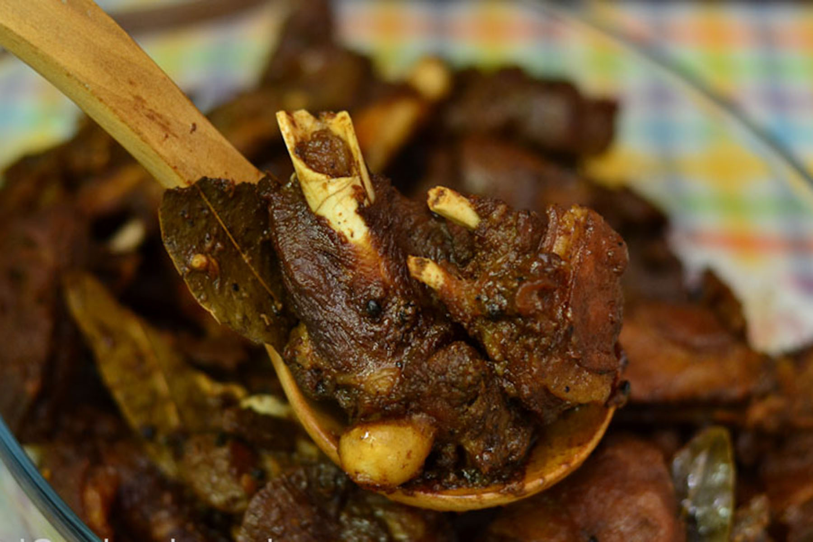

Description
Adobo or adobar (Spanish: marinade, sauce, or seasoning) is the immersion of raw food in a stock (or sauce) composed variously of paprika, oregano, salt, garlic, and vinegar to preserve and enhance its flavor. The Portuguese variant is known as Carne de vinha d'alhos.
- 1 whole dressed duck cut into serving pieces
- 5 cloves garlic minced
- 1 red onion chopped
- 1/4 cup vinegar
- 1/2 cup soy sauce
- 2 cups sprite or 7-UP softdrink
- 1/4 tsp. black ground pepper
- 1 Tbsp. cooking oil
- Laurel leaves
- In a pot, heat cooking oil and saute garlic and onions until fragrant. Add in
the duck and stir fry for about 2 minutes.
- Pour in the soy sauce, vinegar, pepper and laurel leaves. Bring to a boil and
simmer for about 3 minutes.
- Then pour the sprite or 7-Up and again bring to a boil and simmer until
the meat is tender, about 60 minutes. Serve hot.
|